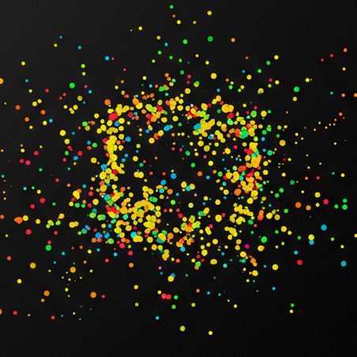

OPS and BCM simulation laboratoryInspect assumptions by making them move
Two models of cognition in motion.
One game follows five agents building routes through an uncertain mountain. The other watches a population exchange keys while problems emerge across a cognitive spectrum.
01 · INTERACTIVE EXPEDITION
02 · EMERGENT ECOLOGY
Pathways
Choose an OPS coin configuration, navigate private belief maps, and compare exploration, consolidation, judgment, and coordination under the same seeded terrain.
Begin expeditionSpectrum
Observe autonomous agents discover, retain, exchange, and apply keys to time-sensitive voids across a continuous cognitive landscape.
Open simulationExploratory models. These simulations turn selected OPS and BCM concepts into explicit computational rules. Interesting behavior inside the simulations does not validate the underlying typologies or assess real people.